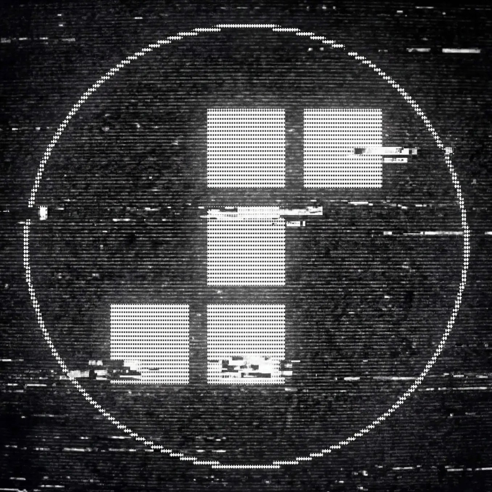
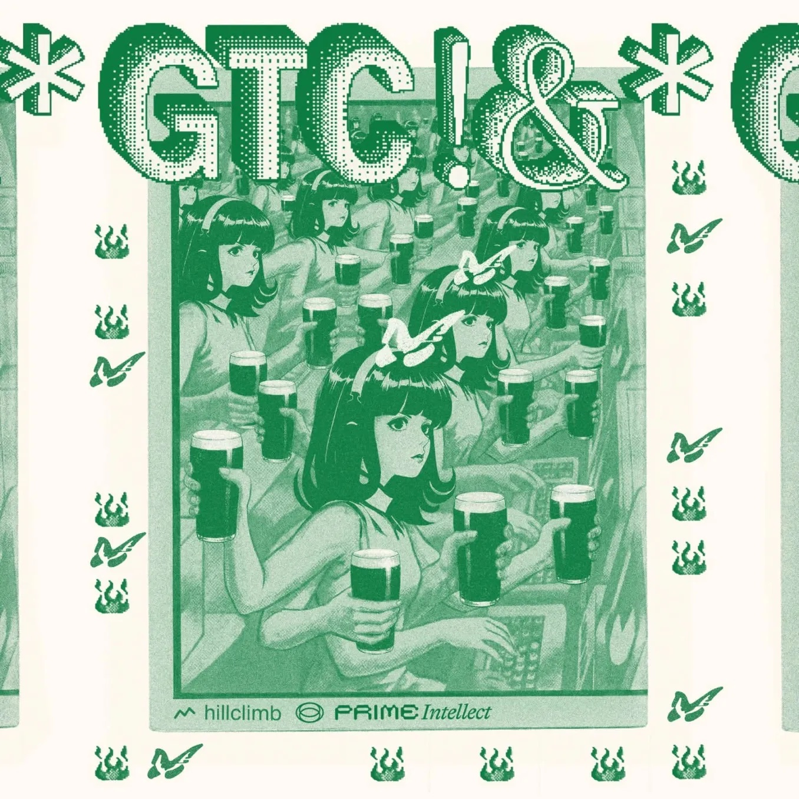
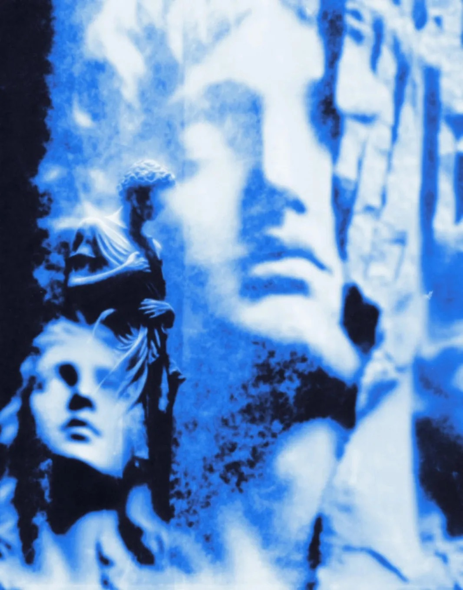
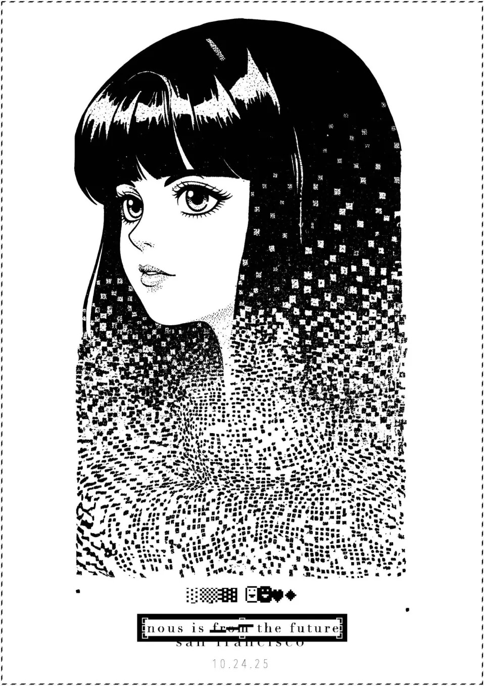
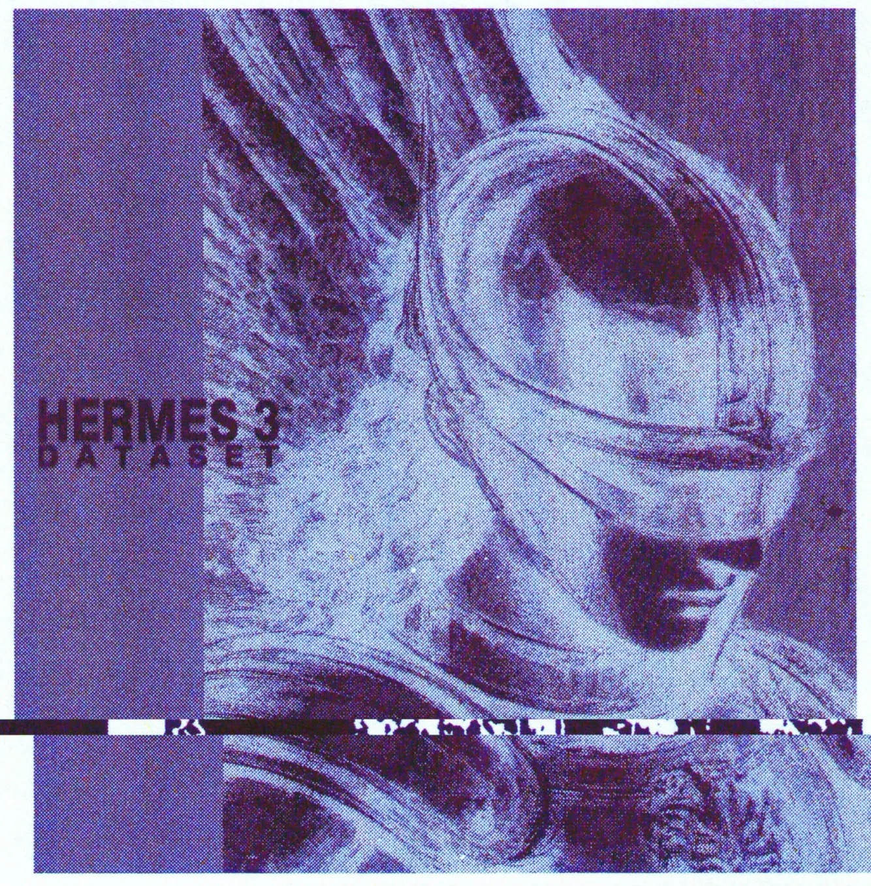

Gallery
The Aesthetic Range
Cyanotype. Risograph. Woodcut. CRT. Glitch. Dither. The visual language spans centuries and media. These are the reference images the system is built against.







// originals/ + inspo/ — reference corpus for prompt development